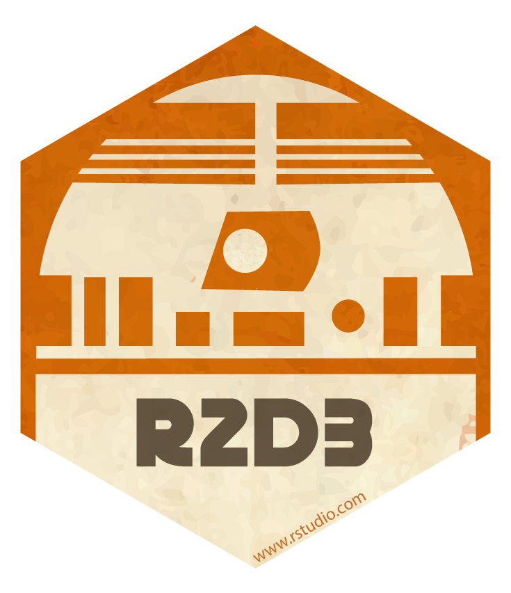
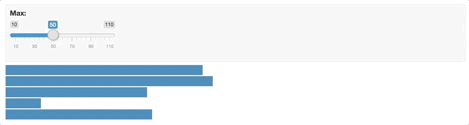

2018-10-05
Please note that the information presented in this post reflects the package as it stood when initially released, and may now be outdated. For the most up-to-date information, kindly refer to https://rstudio.github.io/r2d3/.

As part our series on new features in the RStudio v1.2 Preview Release, we’re pleased to announce the r2d3 package, a suite of tools for using custom D3 visualizations with R.
RStudio v1.2 includes several features to help optimize your development experience with r2d3. We’ll describe these features below, but first a bit more about the package. Features of r2d3 include:
Translating R objects into D3 friendly data structures
Publishing D3 visualizations to the web
Incorporating D3 scripts into R Markdown reports, presentations, and dashboards
Creating interacive D3 applications with Shiny
Distributing D3 based htmlwidgets in R packages
With r2d3, you can bind data from R to D3 visualizations like the ones found on https://github.com/d3/d3/wiki/Gallery, https://bl.ocks.org/, and https://vida.io/explore:
D3 visualizations created with r2d3 work just like R plots within RStudio, R Markdown documents, and Shiny applications.
You can install the r2d3 package from CRAN as follows:
```{r}
install.packages("r2d3")
```To use r2d3, write a D3 script and then pass R data to it using the r2d3() function. For example, here’s a simple D3 script that draws a bar chart (“barchart.js”):
// !preview r2d3 data=c(0.3, 0.6, 0.8, 0.95, 0.40, 0.20)
var barHeight = Math.floor(height / data.length);
svg.selectAll('rect')
.data(data)
.enter().append('rect')
.attr('width', function(d) { return d * width; })
.attr('height', barHeight)
.attr('y', function(d, i) { return i * barHeight; })
.attr('fill', 'steelblue');To render the script within R you call the r2d3() function:
library(r2d3)
r2d3(data=c(0.3, 0.6, 0.8, 0.95, 0.40, 0.20), script = "barchart.js")Which results in the following visualization:
Note that data is provided to the script using the data argument to the r2d3() function. This data is then automatically made available to the D3 script. There are a number of other special variables available within D3 scripts, including:
data — The R data converted to JavaScript.svg — The svg container for the visualizationwidth — The current width of the containerheight — The current height of the containeroptions — Additional options provided by the usertheme — Colors for the current themeWhen you are learning D3 or translating D3 examples for use with R it’s important to keep in mind that D3 examples will generally include code to load data, create an SVG or other root element, and establish a width and height for the visualization.
On the other hand with r2d3, these variables are provided automatically so do not need to be created. The reasons these variables are provided automatically are:
So that you can dynamically bind data from R to visualizations; and
So that r2d3 can automatically handle dynamic resizing for your visualization. Most D3 examples have a static size. This is fine for an example but not very robust for including the visualization within a report, dashboard, or application.
The RStudio v1.2 preview release includes support for previewing D3 scripts as you write them. To try this out, install the preview release then create a D3 script using the new file menu:

A simple template for a D3 script (the barchart.js example shown above) is provided by default. You can use the Preview command (Ctrl+Shift+Center) to render the visualization:
You might wonder where the data comes from for the preview. Note that there is a special comment at the top of the D3 script:
// !preview r2d3 data=c(0.3, 0.6, 0.8, 0.95, 0.40, 0.20)This comment enables you to specify the data (along with any other arguments to the r2d3() function) to use for the preview.
RStudio v1.2 also includes support for rendering r2d3 visualizations within R Markdown documents and R Notebooks. There is a new d3 R Markdown engine which works like this:
```{r setup}
library(r2d3)
bars <- c(10, 20, 30)
```
```{d3 data=bars, options=list(color = 'orange')}
svg.selectAll('rect')
.data(data)
.enter()
.append('rect')
.attr('width', function(d) { return d * 10; })
.attr('height', '20px')
.attr('y', function(d, i) { return i * 22; })
.attr('fill', options.color);
```
Note that in order to use the d3 engine you need to add library(r2d3) to the setup chunk (as illustrated above).
You can also of course call the r2d3() function from within an R code chunk:
---
output: html_document
---
```{r}
library(r2d3)
r2d3(data=c(0.3, 0.6, 0.8, 0.95, 0.40, 0.20), script = "barchart.js")
```The renderD3() and d3Output() functions enable you to include D3 visualizations within Shiny applications:
library(shiny)
library(r2d3)
ui <- fluidPage(
inputPanel(
sliderInput("bar_max", label = "Max:",
min = 0.1, max = 1.0, value = 0.2, step = 0.1)
),
d3Output("d3")
)
server <- function(input, output) {
output$d3 <- renderD3({
r2d3(
runif(5, 0, input$bar_max),
script = system.file("examples/baranims.js", package = "r2d3")
)
})
}
shinyApp(ui = ui, server = server)
See the article on Using r2d3 with Shiny to learn more (including how to create custom Shiny inputs that respond to user interaction with D3 visualizations).
To try out r2d3, start by installing the package from CRAN:
```{r}
install.packages("r2d3")
```Then, download the RStudio v1.2 Preview Release and head over to https://rstudio.github.io/r2d3/ for complete documentation on using the package.
If you aren’t familliar with D3, check out these links to learn the basics and see some examples that might inspire your own work:
Learning D3 — Suggested resources for learning how to create D3 visualizations.
Gallery of Examples — Learn from a wide variety of example D3 visualizations.
We hope that the r2d3 package opens up many new horizons for creating custom interactive visualizations with R!